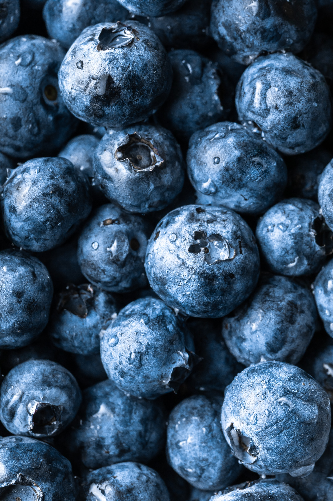

Blueberry

Blueberries are small but mighty fruits known for their impressive nutrient profile. Packed with antioxidants, including anthocyanins, they offer robust protection against cellular damage and inflammation. Alongside their antioxidant power, blueberries provide a generous amount of vitamin C, fiber, vitamin K, and essential minerals like manganese. These nutrients contribute to immune function, promote healthy digestion, support bone health, and aid in overall well-being. Additionally, blueberries contain a variety of phytochemicals, such as flavonoids and phenolic acids, which have been linked to cognitive benefits and cardiovascular health. Including blueberries in your diet is a delightful way to enjoy their sweet, tart flavor while reaping the numerous health benefits they offer. Whether eaten fresh, added to smoothies, cereals, or baked goods, blueberries make a versatile and nutritious addition to your meals. So indulge in these vibrant berries to boost your antioxidant intake and support your overall health and vitality.